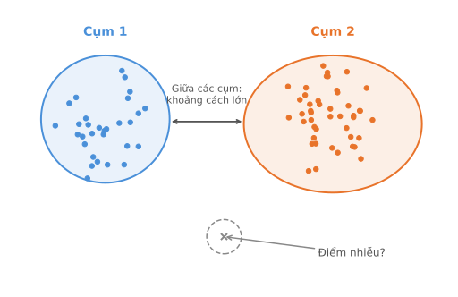
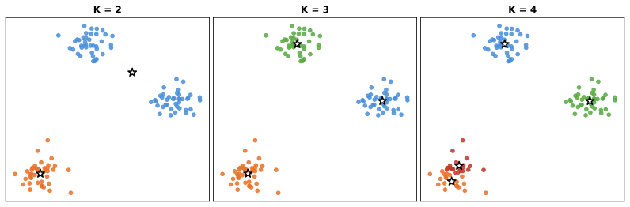
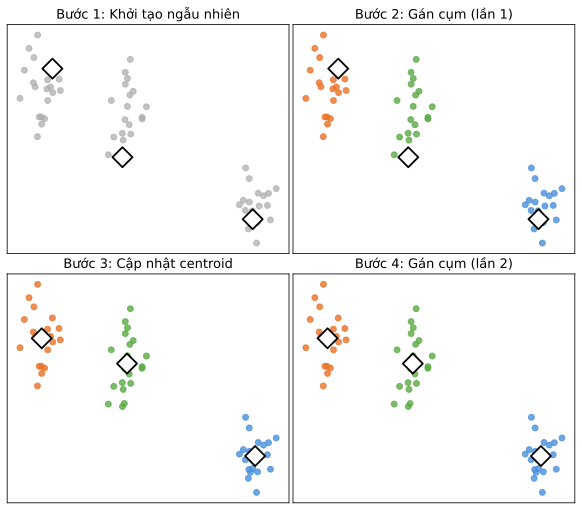
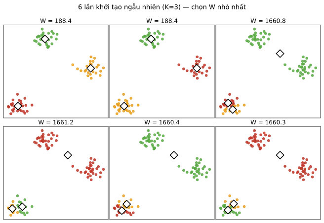
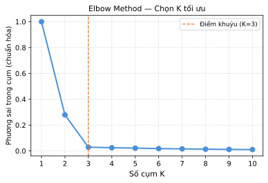
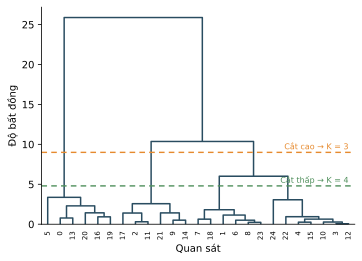
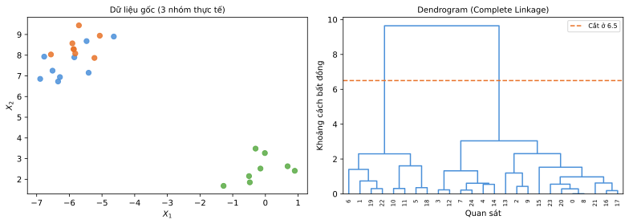
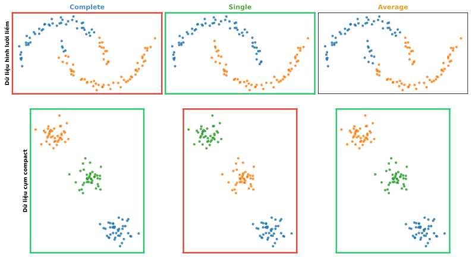

Học máy
Bài 7: Phân cụm
Trường ĐH Công nghệ – Đại học Quốc gia Hà Nội
Nội dung
1.
Tổng quan
Phân cụm là gì?
Nhóm các quan sát thành các cụm sao cho:
- Trong cụm: độ tương đồng cao (intra-cluster similarity ↑)
- Giữa các cụm: độ tương đồng thấp (inter-cluster similarity ↓)
Không có nhãn đầu ra — đây là bài toán học không giám sát.

Ứng dụng phân cụm (1/2)

Phân nhóm khách hàng
Nhóm khách hàng theo hành vi, sở thích để cá nhân hoá dịch vụ

Phân tích biểu hiện gen
Nhóm các gen và mẫu có pattern biểu hiện tương tự nhau
Ứng dụng phân cụm (2/2)

Nén ảnh
Thay thế màu pixel bằng K màu đại diện (K-means)

Phân đoạn ảnh
Phân vùng ảnh thành các vùng có đặc trưng tương đồng
Bài toán phân cụm
Cho tập quan sát \(\mathcal{U}\) và hàm khoảng cách \(d: \mathcal{U} \times \mathcal{U} \to \mathbb{R}^+\), nhóm các phần tử thành các cụm sao cho:
- Khoảng cách giữa các điểm trong cùng cụm nhỏ
- Khoảng cách giữa các điểm khác cụm lớn
Nhỏ và lớn ở đây không được định nghĩa chặt chẽ.
Phân vùng độc quyền
Mỗi quan sát thuộc đúng một cụm
Phân vùng mềm
Mỗi quan sát có xác suất thuộc từng cụm
Phân cấp
Cây cụm lồng nhau theo mức độ tương đồng
2.
Phân cụm K-means
Định nghĩa K-means
Tìm \(K\) cụm rời nhau \(C_1, \ldots, C_K\) sao cho: \(C_1 \cup \cdots \cup C_K = \{1,\ldots,n\}\) và \(C_k \cap C_{k'} = \emptyset\) với \(k \neq k'\).
Hàm mục tiêu — tối thiểu hóa độ phân tán trong cụm:
\[ \min_{C_1,\ldots,C_K} \sum_{k=1}^{K} W(C_k) \]
\[ W(C_k) = \frac{1}{|C_k|} \sum_{i,i' \in C_k} \sum_{j=1}^{p} (x_{ij} - x_{i'j})^2 = 2\sum_{i \in C_k} \|x_i - \bar{x}_k\|^2 \]
K-means: K = 2, 3, 4

Cùng dữ liệu, kết quả phân cụm thay đổi theo K. ★ = centroid
Thuật toán Lloyd (K-means)
- Gán ngẫu nhiên mỗi điểm vào một trong \(K\) cụm.
- Lặp đến khi cụm không đổi:
- Tính centroid mỗi cụm (trung bình vị trí các thành viên).
- Gán mỗi điểm vào cụm có centroid gần nhất (khoảng cách Euclid).
Thuật toán Lloyd — Minh hoạ

Diễn giải: Tại sao Lloyd hoạt động?
Biểu diễn lại hàm mục tiêu qua centroid \(\mu_k\):
\[ \min_{C_k,\,\mu_k} \sum_{k=1}^{K} \sum_{i \in C_k} \|x_i - \mu_k\|^2 \]
Bài toán kết hợp này rất khó, nhưng hai bài toán con lại đơn giản:
Cố định \(C_k\) → tìm \(\mu_k\)
Nghiệm tốt nhất là trung bình mẫu: \(\mu_k = \bar{x}_k\)
(bước 2a — tính centroid)
Cố định \(\mu_k\) → tìm \(C_k\)
Gán mỗi điểm vào cụm gần nhất:
\(\hat{k}(i) = \arg\min_k \|x_i -
\mu_k\|\)
(bước 2b — gán cụm)
Đây là chiến lược tối ưu hoá xen kẽ — mỗi bước đều giảm hàm mục tiêu \(W\), nên thuật toán hội tụ sau hữu hạn bước.
Khởi tạo K-means
K-means là thuật toán tham lam → chỉ tìm cực tiểu cục bộ.
- Cần chạy nhiều lần với điểm khởi tạo khác nhau.
- Chọn kết quả có \(W\) nhỏ nhất.
K-means++ — thuật toán khởi tạo phổ biến nhất:
- Chọn centroid đầu tiên ngẫu nhiên.
- Các centroid tiếp theo ưu tiên các điểm xa centroid hiện tại.
- Giảm đáng kể nguy cơ hội tụ về cực tiểu xấu.
Khởi tạo K-means — Minh hoạ

K-medoids
Hạn chế của K-means:
- Cần không gian metric (centroid phải tính được).
- Nhạy cảm với nhiễu ngoại lai (outliers).
K-medoids — dùng điểm dữ liệu thực thay cho centroid:
\[ i_k^* = \arg\min_{i: C_i = k} \sum_{j: C(j)=k} d(x_i, x_j) \]
- Medoid: quan sát gần nhất với tất cả quan sát còn lại trong cụm.
- Dùng được khi chỉ có ma trận khoảng cách.
- Chi phí tính toán tăng từ \(N\) lên \(N^2\).
Chọn K — Elbow Method
Heuristic điểm khuỷu: tìm điểm uốn (elbow) trên đường cong:
- Tăng \(K\) luôn giảm \(W\), nhưng có lợi nhuận giảm dần.
- Chọn \(K\) tại điểm đường cong "gãy".
- Áp dụng cả cho PCA (chọn số PC) và K-means (chọn K).
Không có quy tắc tự động — cần phán đoán trực quan.

Điểm khuỷu tại K=3
3.
Phân cụm
phân cấp
(Hierarchical Clustering)
Động lực — Không cần chọn K
Phân cụm phân cấp không yêu cầu chọn trước K.
Top-down (chia đôi)
Bắt đầu từ 1 cụm, chia đệ quy.
Bottom-up (tích tụ)
Bắt đầu từ n cụm đơn, gộp dần.
Kết quả là dendrogram — biểu đồ cây phân cấp.

Cắt cây ở các mức khác nhau sẽ cho số cụm khác nhau.
Đọc Dendrogram
Cấu trúc cây, trong đó:
- Mỗi lá là một quan sát.
- Mỗi nút trong là gốc của một cụm tiềm năng.
- Trục \(y\): độ bất đồng khi hai cụm được gộp.
- Thứ tự trục \(x\) là tùy ý (miễn tuân cấu trúc cây).
cắt cao → ít cụm lớn | cắt thấp → nhiều cụm nhỏ.
Đọc Dendrogram — Minh hoạ

Đường đứt cam = ngưỡng cắt → 2 cụm
Lưu ý khi đọc Dendrogram

Khoảng cách trên trục ngang không phản ánh độ tương đồng giữa các quan sát
Các cách biểu diễn Dendrogram

Trái: tiêu chuẩn (màu đơn). Phải: tô màu theo cụm sau khi cắt tại K = 3.

Dạng tròn (radial): cùng một cây phân cấp, nhưng trải theo vòng tròn; đọc theo mức gộp, không theo vị trí các lá.
Thuật toán Agglomerative
- Mỗi quan sát là một cụm đơn; tính ma trận khoảng cách tất cả các cặp \((d_{ij})\).
- Gộp hai cụm có khoảng cách nhỏ nhất thành một cụm mới.
- Tính khoảng cách giữa cụm mới và các cụm còn lại.
- Lặp bước 2–3 cho đến khi còn một cụm duy nhất.
Agglomerative vs. Divisive
- Agglomerative (tích tụ, bottom-up) thường được dùng nhiều hơn.
- Divisive (phân chia, top-down) dễ mắc lỗi sớm: chia sai từ đầu thì khó sửa lại.
- Với agglomerative, nếu gộp chưa hợp lý, cấu trúc dendrogram vẫn thường dễ đọc và dễ diễn giải hơn.
Các phương pháp Linkage
Cho \((d_{ij})\) là ma trận bất đồng và \(d(G,H)\) là khoảng cách giữa hai cụm \(G\) và \(H\):
Complete linkage (CL)
\(d_{CL}(G,H) = \max_{i\in G, j\in H} d_{ij}\)
→ Tạo ra các cụm compact.
Single linkage (SL)
\(d_{SL}(G,H) = \min_{i\in G, j\in H} d_{ij}\)
→ Dễ tạo cụm dạng chuỗi dài.
Average linkage (GA)
\(d_{GA}(G,H) = \dfrac{1}{N_G N_H}\sum_{i\in G}\sum_{j\in H} d_{ij}\)
→ Thỏa hiệp giữa CL và SL.
Centroid linkage (CTL)
\(d_{CTL}(G,H) = \|\bar{G} - \bar{H}\|^2\)
→ Có thể gây đảo ngược (inversions).
Linkage nào phù hợp với dữ liệu nào?

Viền xanh = phù hợp, viền đỏ = không phù hợp. Single tốt cho cụm dạng chuỗi; Complete và Average tốt cho cụm compact.
So sánh phương pháp Linkage

Average (trung bình) vs. Single (chuỗi) vs. Complete (compact) trên cùng dữ liệu
Ví dụ: Dữ liệu khối u người

Average / Single / Complete cho kết quả rất khác nhau trên cùng dữ liệu microarray
Khi nào phân cụm phân cấp phù hợp?
- Dendrogram hữu ích khi dữ liệu thật sự có cấu trúc lồng nhau ở nhiều mức.
- Nếu dữ liệu chỉ có một cách chia thực dụng, nhưng không có cấu trúc cây tự nhiên, thì dendrogram có thể gây hiểu nhầm.
- Khi đó, cây phân cấp vẫn tồn tại, nhưng nó có thể phản ánh thuộc tính phụ hơn là cách chia cụm mà ta quan tâm.
Khi nào phân cụm phân cấp phù hợp?

Trái: dữ liệu có thể chia khá tự nhiên theo giới tính. Phải: dendrogram lại gộp theo quốc tịch trước, nên không làm nổi cấu trúc mà ta quan tâm.
4.
Lựa chọn thực tế
Chọn ma trận bất đồng
Mặc định thường dùng khoảng cách Euclid. Đôi khi khoảng cách tương quan phù hợp hơn khi các quan sát tương đồng nếu hình dạng profile giống nhau, dù độ lớn khác nhau.

Obs 1 & 2 có hình dạng giống nhau (tương quan cao) nhưng Euclid xa nhau; Obs 1 & 3 ngược lại
Ví dụ: Hồ sơ mua hàng

Số mặt hàng mua cho 8 khách hàng — Euclid không phân biệt được xu hướng mua hàng
Chuẩn hóa dữ liệu
Nên chuẩn hóa khi các đặc trưng có đơn vị khác nhau:
- Ví dụ: khách hàng có xu hướng mua nhiều tất hơn máy tính.
- Nếu không chuẩn hóa, khoảng cách bị chi phối bởi đặc trưng có giá trị lớn.
- Chuẩn hóa (z-score) đưa mọi đặc trưng về cùng thang đo.
Khi nào KHÔNG nên chuẩn hóa?
- Khi độ lớn mang ý nghĩa quan trọng (ví dụ: lượng chi tiêu).
- Khi muốn phân cụm theo giá trị tuyệt đối.
Các vấn đề thực tế
Những quyết định nhỏ có hậu quả lớn:
Phân cụm phân cấp
- Chọn ma trận bất đồng nào?
- Phương pháp linkage nào?
- Cắt dendrogram ở đâu?
K-means
- Chọn K bằng cách nào?
- Có chuẩn hóa dữ liệu không?
Đánh giá kết quả phân cụm:
- Rất khó nếu không có nhãn.
- Có thể dùng bootstrap để kiểm tra độ ổn định cụm.
- Nếu có nhãn một phần: đánh giá độ tinh khiết lớp (class purity).
Phân cụm đồng thời hàng và cột
Áp dụng phân cấp riêng biệt cho cả quan sát và đặc trưng, hiển thị dưới dạng heatmap sắp xếp theo cụm — dễ phát hiện pattern ẩn.
Dữ liệu Iris: 150 mẫu hoa diên vĩ thuộc 3 loài (setosa, versicolor, virginica), mỗi mẫu có 4 đặc trưng đo kích thước đài hoa và cánh hoa.

Heatmap phân cụm tập dữ liệu Iris — hàng (quan sát) và cột (đặc trưng) đều được sắp xếp theo cụm
Tổng kết
So sánh K-means và phân cụm phân cấp
K-means
- Cần chọn trước \(K\).
- Nhanh, dễ mở rộng.
- Tìm cực tiểu cục bộ — cần nhiều lần chạy.
- Nhạy cảm với outliers.
- Phù hợp khi cụm dạng cầu (spherical).
Phân cụm phân cấp
- Không cần chọn trước số cụm.
- Cho phép xem toàn bộ phân cấp (dendrogram).
- Tốn bộ nhớ \(O(n^2)\) — khó mở rộng.
- Kết quả phụ thuộc vào linkage.
- Phù hợp khi dữ liệu có cấu trúc phân cấp tự nhiên.
Phân cụm mềm và các biến thể
- Soft K-means / Gaussian Mixture Model: mỗi quan sát có xác suất thuộc từng cụm.
- Subspace clustering: mỗi cụm tồn tại trong một không gian con khác nhau.
- Density-based clustering (DBSCAN): cụm là vùng mật độ cao.
- Spectral clustering: dùng đồ thị láng giềng để phân cụm hình dạng bất kỳ.
Tài liệu tham khảo
- ISLR, Chương 12.
- ESL, Chương 13–14.
- Muandet & Vreeken, lecture slides.